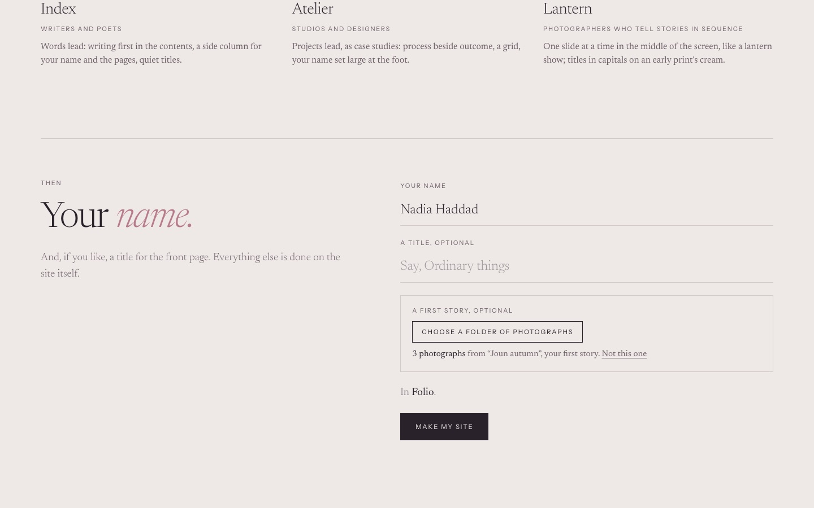
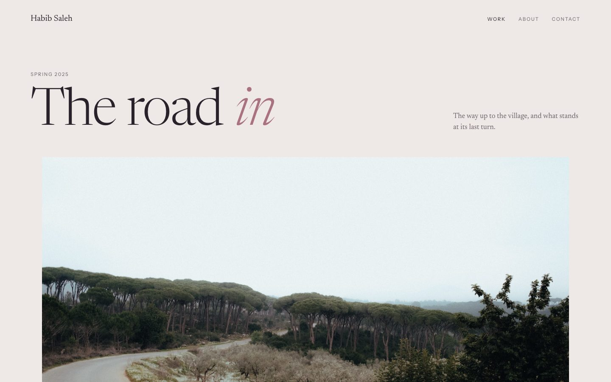
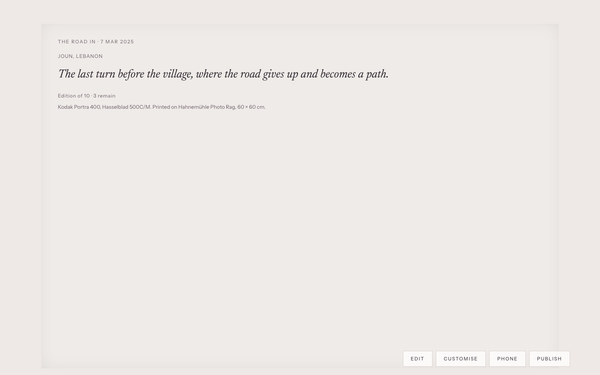
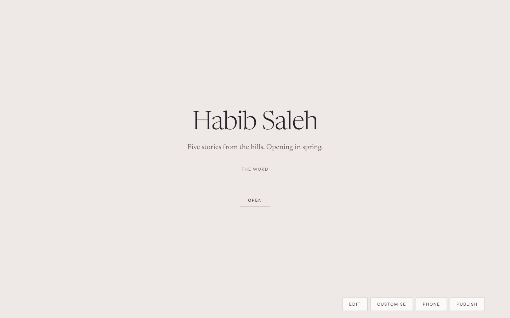
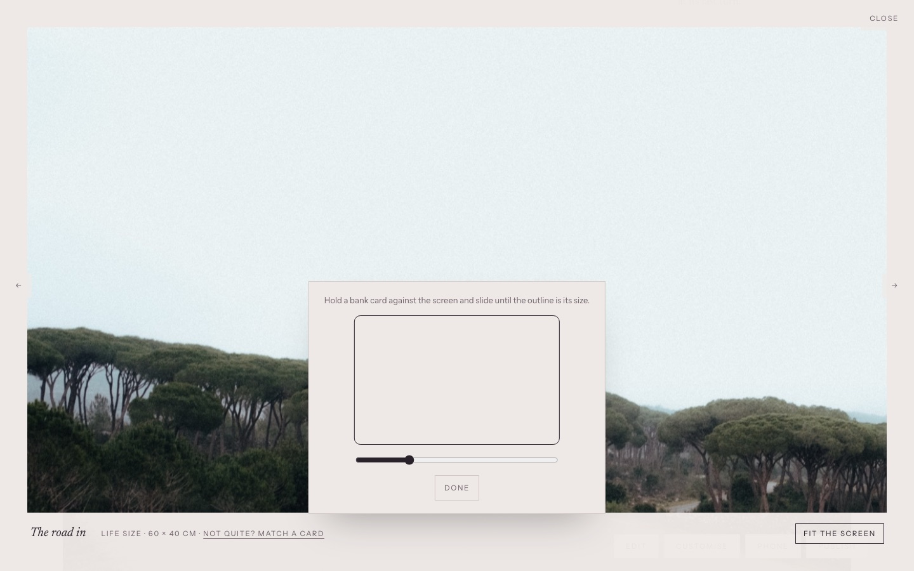
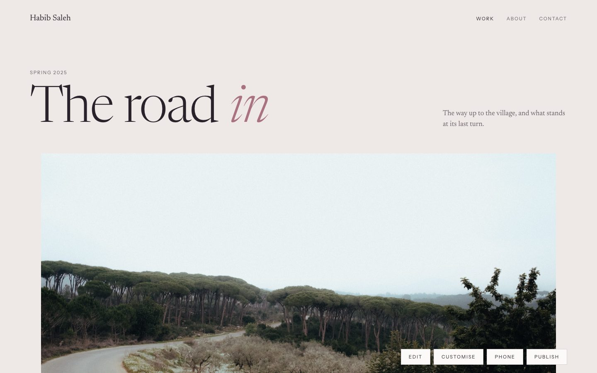

One of these is yours.
Things no other wall gives you.
Every one is already built and runs in the sites above. None of them asks anything of you until you reach for it.
A folder becomes a story.
Drop a folder of photographs. The story appears in the order the pictures were taken, with the titles and captions you already wrote in the files. Your first site can begin this way, before you have chosen anything.

Turn it over.
Every print has a back: where it was made, a line in your hand, the edition, the paper. A visitor turns it over; you write on it in place.


A door, when you want one.
A page, or the whole site, behind a word; or a holding page before you open. In the published files a page behind a word is sealed, not hidden: nothing of it can be read without the word.

Life size.
A work with a real size can be seen at its centimetres on the screen, matched once to a bank card held against it. A sixty-centimetre print is sixty centimetres.

Publish, and every version kept.
Editing is always a draft. Publish says what changed, in your words. Every published version is kept, and any of them can be put back.

Photographs, films, paintings, words.
Show the work as you see it.
Free to begin, with twenty photographs and a choice of templates. The full plan for a body of work: every template and look, films, your own domain.